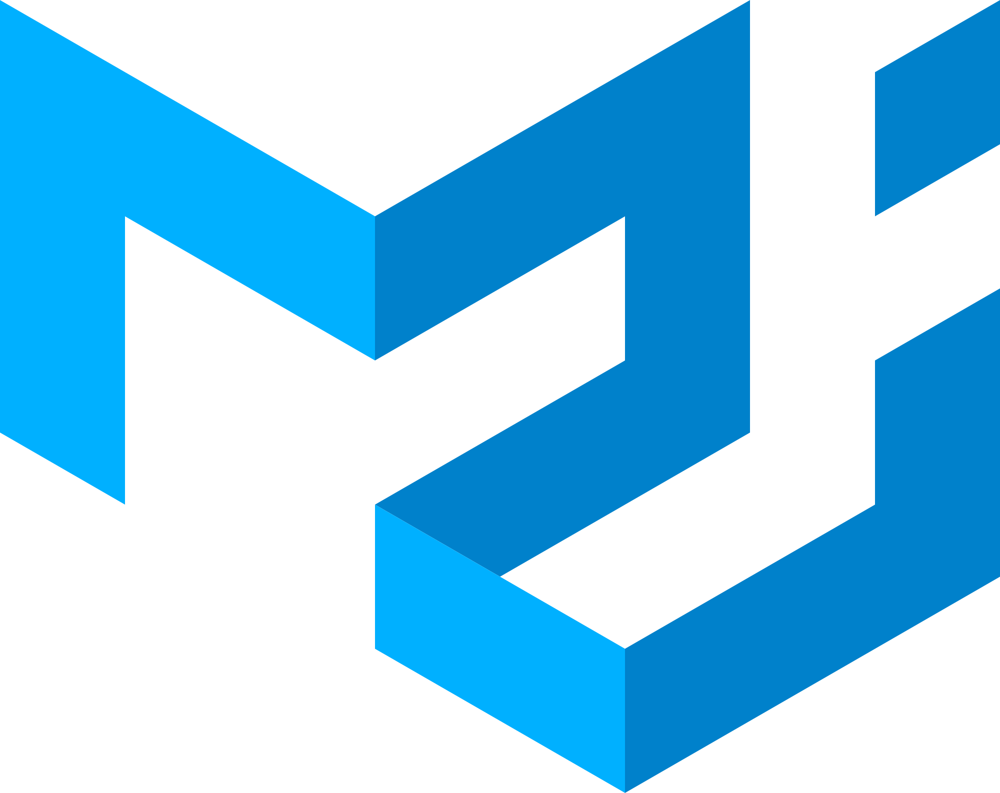
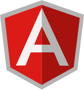
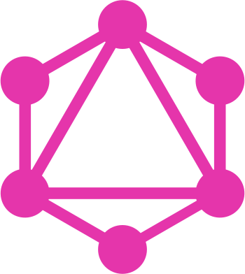

Alexei Selivanov
Senior product engineer with a decade of full-stack experience and a background in mathematics
I own products end to end — from PostgreSQL schemas, financial ledgers, and AI agents to dense web interfaces,
native mobile apps, and formal proofs in Lean 4.
My path runs from eight years at Upwork, through early-stage startups (Beeper in Silicon Valley, Tymely in Tel Aviv), to
building an ERP-scale B2B commerce and finance platform from its first commit.
Experience
Senior Product Engineer Full-time
Magad
Oct 2025–Present


B2B commerce and operations platform for the wholesale electronics trade — an ERP-scale system spanning catalog,
purchasing, warehouse, multi-channel sales, finance, market intelligence, and AI analytics.
Built in a TypeScript/Bun monorepo (~665K LOC, 26 workspaces): a Next.js back office (360+ routes) over a
420-table PostgreSQL schema, a web storefront, native iOS & Android apps, a Telegram bot, and 19 independently
deployed background services.
Fully localized (13,100+ i18n keys) and documented in 135+ ADRs.
#1 contributor (2,600+ commits, over half of git history).
Project screenshots
-
Formally verified core domain logic in Lean 4: proved 350+ theorems across 10 modules (pricing ladders, stock
allocation, money rounding & margins, purchase limits, trading schedules, cutover state machine),
differential-tested against TypeScript and PostgreSQL, and built a bounded model checker exploring 16 concurrent
workflows.
Zero
sorrys; caught production float-rounding and scheduling edge cases, filed 50+ concurrency
bugs from minimized traces (pinned as regression tests), and drove storefront mutation score from 72% to 95%
with Stryker.
-
Shipped Ask Data, a text-to-SQL analyst agent for non-technical staff:
plain-language questions compile into reviewed, versioned datasets that can run as monitors alerting Slack on a
schedule or on table writes.
Vercel AI SDK harness running the Pi coding agent in a sandbox with the app source mounted read-only,
grounding SQL in real business logic rather than prompt summaries.
-
Designed an agentic taxonomy builder that crawls brand storefronts and web archives into a staged
brand → product → model → variant tree with specs and part numbers, promoted to the live catalog on approval.
Full-page LLM evidence extraction, multi-pass refinement and run-wide audits, lease-based resumable jobs
with per-run cost tracking, Keepa barcode enrichment, and Playwright scraping via Bright Data.
-
Built AI document and vision pipelines: supplier PDF invoices parsed into structured order lines (OCR + Gemini
with attribute-constraint solving), and warehouse box photos matched to SKUs across three barcode engines and
vision LLMs. Orchestrated across OpenAI and Gemini via Vercel AI SDK.
-
Engineered TRON (USDT TRC-20) treasury workflows: on-chain deposits auto-booked as pending receipts, outgoing
payouts grouped and reconciled, wallets managed via Telegram bot, and counterparties AML-screened against the
Tether blacklist and Chainalysis sanctions with Slack/Telegram alerts.
Filters out spoofed tokens and zero-value address-poisoning transfers; books opening balances and dust;
re-screens historical senders on a schedule.
-
Launched the multi-channel B2B storefront — native iOS & Android apps, web app, Telegram
bot, and back-office console — featuring effective-dated tiered pricing, trading shifts, multi-store reseller
cascades, and live offer/counter-offer negotiation.
Transactional outbox for APNs, Firebase, and Telegram delivery; 21-flow E2E suite running against a real
Postgres stand on both iOS simulator and Android emulator, published as screenshot storyboards.
-
Developed market-intelligence pipelines aggregating retail and wholesale offers across Keepa/Amazon, Best Buy,
Walmart, B&H, ~80 regional Apple storefronts (including lead times by part number), and Telegram/WhatsApp
dealer groups.
Playwright via Bright Data Unlocker, cross-source barcode verification, LLM normalization of free-text
dealer price lists, and an LLM-tagged market-news feed.
-
Owned the purchase-order lifecycle and trade-document engine (commercial invoices, packing lists, approvals,
audit trail), and co-built sales orders, multi-currency accounting, and scan-driven warehouse fulfillment from
receiving to weighed pallet assembly.
Direct browser-to-printer Zebra label output via a custom ZPL generator.
-
Led the warehouse iOS app: full UX redesign, inbound truck & bin sorting stations, receiving photo QA (QR
routing and blur detection), counterfeit Apple box checks, and a native Swift barcode/OCR scanner built on
AVFoundation and Vision.
Frame-level OCR consensus voting, ROI gating, adaptive throttling, low-light detection, and a 14-flow
simulator E2E walk with a virtual camera feed.
-
Hardened platform security and PostgreSQL performance: enforced per-endpoint authorization and branch scoping
across all server actions via CI, closed account-takeover and cross-branch write paths, added session revocation
and OTP rate limits, and tuned hot inventory/shelf queries with partial indexes.
Senior Full-Stack Engineer Part-time
Tymely.ai
Sep 2023–Sep 2025



AI customer-support platform whose LLM engine resolves e-commerce tickets end to end.
#1 contributor (~780 commits) to the React/TypeScript operations console — the human-in-the-loop workbench for
supervising, testing, and tuning the AI — alongside regular backend work in the Python policy engine.
-
Shipped the redesigned ticket-handling workspace and owned the "argument" review UX: approval flows,
source-text highlighting, and bulk editing. Arguments are LLM-extracted variables that policy decisions
branch on.
-
Designed the LLM experimentation suite for running prompt and extraction trials against production tickets.
Model & temperature controls, live report polling, virtualized result grids.
-
Built the Live Resolutions dashboard end to end — a real-time animated feed of tickets resolved autonomously by
the AI. React frontend backed by FastAPI/SQLAlchemy aggregation queries over JSONB.
-
Engineered a custom rich-text template editor on Lexical.
Handles mixed HTML fragments, Markdown, and Jinja2 templates within a single document.
-
Developed a React Flow no-code policy graph editor with inline node validation, execution-path highlighting, and
embedded template editing. Graph virtualization and clustering kept 1,000+ node policies performing
smoothly.
-
Implemented real-time collaboration — ticket read/write locks, live presence, and cross-session sync — over AWS
Amplify PubSub.
-
Owned frontend infrastructure: removed Nx and migrated builds from Webpack to Vite (435 files, −55K LOC), then
upgraded MUI v5→6, Amplify v5→6, and TanStack Query v4→5 with a full data-layer refactor.
All landed incrementally without feature freezes.
-
Stood up the Playwright E2E pipeline from zero. Automated Cognito OTP login, visual diffs, Dockerized
runners, per-PR GitHub Actions.
-
Contributed to the Python policy engine: argument lifecycle, XSS-safe Jinja2 response templating, and helpdesk
integrations (Zendesk, Salesforce, Five9). FastAPI, SQLAlchemy, PostgreSQL, AWS Lambda & CDK.
Senior Frontend Engineer Part-time
Beeper
Dec 2020–Feb 2022
Universal chat client unifying iMessage, WhatsApp, and a dozen other networks — a Silicon Valley startup by
Eric Migicovsky, creator of
Pebble (later acquired by Automattic).
Joined as one of two engineers on a five-person team and solely owned the Electron desktop app for over a year,
partnering closely with the designer.
Tailored the open-source Element Matrix client into a
consumer-grade desktop app:
- Rebuilt unread-state and user-inactivity tracking. Reliable jump-to-first-unread and sticky scroll to
bottom across rooms.
- Redesigned the conversation sidebar. Clean layout with pinnable favorites modeled after iMessage.
- Delivered native desktop polish across macOS, Windows, and Linux. Including translucent macOS vibrancy
window chrome — non-trivial in Electron at the time.
Senior Full-Stack Engineer Full-time
Upwork
Oct 2016–Oct 2024



Eight years as a full-stack engineer at the world's largest freelance marketplace, growing from product feature
delivery to leading core architecture migrations.
- Shipped conversion-critical features across high-traffic marketplace flows.
- Migrated legacy AngularJS flows to Vue & Nuxt. Designed the Vuex store architecture with
request-deduplicating action decorators and responsive layouts.
- Led a 5-engineer team through a six-month migration of the PHP/Symfony middle tier to GraphQL. Owned
schema design, resolvers, frontend cutover, testing, and staged rollout.
Personal Projects
Native iOS and Android app for vocabulary and spelling practice: spaced repetition, context-aware dictionary
lookups, picture and voice cards, and shared collections with individual learner progress.
SwiftUI & SwiftData, Kotlin & Jetpack Compose, Go & PostgreSQL.
Project screenshots
Demo Projects
Aug 2026


On-chain NFT auction platform that projects Ethereum event logs into low-latency read models.
Solidity contracts (ERC-721 + English auction) on Hardhat, a NestJS backend over PostgreSQL, Kafka, and Redis,
and a React SPA with wagmi wallet flows and Sign-In with Ethereum (EIP-4361).
-
Reorg-aware chain indexer with 5-block confirmation depth — a
(block number, hash) cursor rewinds
automatically on fork mismatch. At-least-once Kafka delivery with idempotent consumers; read models fully
replayable from chain logs.
-
Transactional outbox for API-originated writes: state changes and domain events commit atomically in Postgres
before relay to Kafka.
-
Read models served over REST, GraphQL with keyset pagination, and live WebSocket subscriptions.
Projection-driven Redis cache invalidation and pub/sub fan-out for live bid updates.
-
End-to-end type safety from DB to UI: Kysely types generated from migrations and Zod event schemas enforced on
both producer and consumer — turning schema drift into a compile error.
-
Full mint-to-settlement E2E suite. CI with linting, type checks, and schema-drift gates; Prometheus
metrics including indexer-lag gauges.
Education
M.S. in Computer Science — Ural State University, 2009–2011
Graduate-level computer science built on a mathematics foundation.
B.S. in Mathematics — Ural State University, 2005–2009
Pure mathematics, physics, and computer science.